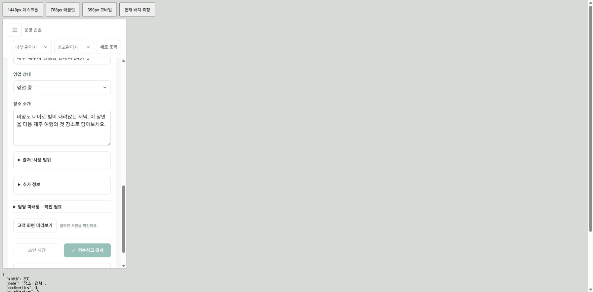
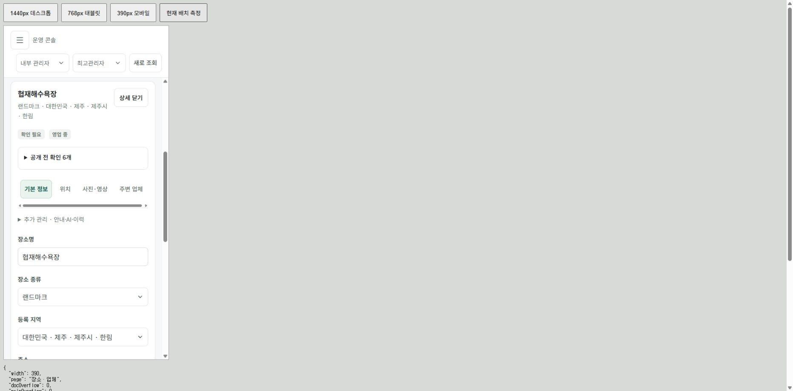

관리자 7개 메뉴를 1440·768·390px, 총 21개 상태에서 확인. 문서·본문의 화면 밖 가로 넘침 없음. 넓은 표는 표 안에서만 가로 이동.
| 폭 | 확인 | 버튼·탭 |
|---|---|---|
| 1440px | 7개 메뉴 · 넘침 없음 | PC 보조36px 유지 · 탭 간격8px |
| 768px | 7개 메뉴 · 넘침 없음 | 44px 이상 · 탭 간격8px |
| 390px | 7개 메뉴 · 넘침 없음 | 44px 이상 · 긴 탭 한 줄 넘김 |
실제 검수: 검색 ‘해’, 목록923px → 상세 상단8px → 탭 변경490px 유지 → 목록923px 복귀. 검색어 유지.
운영 현황1440 · 설정768 · 설정390 · 마지막 탭 키보드 접근
기존: 목록 위치가 상세에 적용돼 아래부터 열림

수정: 이름·탭부터 표시, 목록 복귀 위치 보존

목록 복귀 캡처 · 스크롤 실측 · 전체 결과 JSON · 폭별 재검수 화면
타입 검사 통과. root 최종 확인 기준 자동 검증681/681, 웹 production 빌드, 네이티브 타입 검사 통과.
모바일 미리보기 설명을 접을 수 있게 하면 업무 내용이 더 빨리 보임. 예시와 실제 처리 상태 구분은 유지.